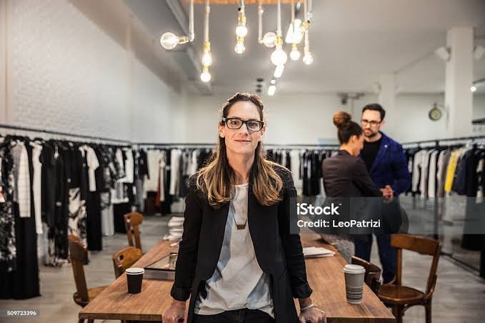

Qué hacemos
En Estilo Vivo Jenif diseñamos ropa urbana con alma y propósito. Cada prenda es pensada para ofrecer estilo, comodidad y conciencia ambiental. Trabajamos con materiales reciclados y sostenibles, cuidando cada detalle en los procesos de producción.
Nuestro enfoque está en la moda responsable: colaboramos con talleres locales, promovemos el comercio justo y buscamos reducir la huella ecológica de nuestras colecciones. Nos inspira la idea de que vestir bien también puede significar cuidar el planeta.
← Regresar al inicio